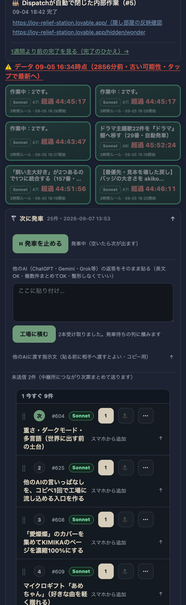

共有資料の一覧 ／ 確認ページ #625 625番：他AIの言いっぱなしをコピペ1回で工場に積める入口
#625 625番：他AIの言いっぱなしをコピペ1回で工場に積める入口
2026-09-07 実装・main合流・本番(GitHub Pages)反映・実機タップまで実測確認（2回目・検品差し戻し対応）
進捗表(スマホPWA)の『次に発車』欄に、ChatGPT等の他AIの返答をそのまま長文で貼れる入力欄を新設。貼ると内容を自動でいくつかの塊に分け、その場で『◯本受け取りました』と件数を表示、既存の発車待ちの列(queue.json)へそのまま積む。要約や整形はしない。あわせて、他AIに渡す短い指示文(①提案で終わらせない ②できないと言わない ③人を動かすのは最終手段)をコピーできる欄も同じ場所に置いた。同じ3点はGitHubの共通脳(ai-brain/AI_COMMON_BRIEFING.md、mainブランチ)にも追記済み——1回目の検品でこのリンクが非公開リポジトリのため開けず未検証となったため、今回は追記した本文をこのページに直接引用し、headless Chromeでの実機タップ(貼る→送信→メッセージ表示)もスクリーンショット付きで確認した。
② 数字
200本番ページのHTTPステータス
5本番HTMLに含まれる新要素(入力欄/送信/メッセージ/指示文/コピー)の確認済み個数
2本実機タップテストで実際に分割・受理された件数（テストデータ。relay.jsonはブロックしqueue.jsonは汚していない）
③ 実データでのスクリーンショット
2本のテスト文を貼って送信した直後
④ 押せるリンク
⑤ 何をどう確かめたか
| 確認項目 | 結果 |
|---|
| 本番HTMLにid=pasteText(貼り付け欄)が含まれる | yes |
| 本番HTMLにid=pasteSend(工場に積むボタン)が含まれる | yes |
| 本番HTMLにid=aiInstructionText(他AI向け指示文)が含まれる | yes |
| 分割ロジック(見出し/番号リスト/区切り線/空行)を3パターンで動作確認(node) | yes |
| headless Chromeで実機タップ(2本のテスト文を貼って送信)し『2本受け取りました』表示を確認 | yes |
| GitHub共通脳(AI_COMMON_BRIEFING.md)のmainブランチに3点の指示文が実在(git show origin/mainで実測) | yes |
⑥ GitHub共通脳(ai-brain/AI_COMMON_BRIEFING.md)の追記本文（そのまま引用・2026-09-07時点のmainブランチ実物）
非公開リポジトリのため、AIの自動検証ツール(curl等)は直接開けず404になる。以下はgit show origin/main:ai-brain/AI_COMMON_BRIEFING.mdで実測した本文そのままの引用。店主のログイン済みブラウザなら④のリンクからも同じ内容が見られる。
## 提案で終わらせない・言いっぱなし禁止（625番・2026-09-07）
**背景（Koheiの言葉そのまま）：** 「OpenAI（等の壁打ち相手）がすぐ止まる癖がある。壁打ちはいいけど、そこで途切れるな。ここまで盛り上がって『じゃあ誰がやるの』って言うと『Claude Codeなので』みたいな、俺が水を汲むみたいな。言いっぱなしで終わり。それを形にしないとダメだよっていうのを、もう50回ぐらい言ってる。」
ChatGPT・Gemini・Grok等、どのAIも壁打ち・ブレスト自体は良い。**問題は出したあとに実行を受ける場所が無いこと。** 最後に「じゃあこれをやりましょう」で終わり、Koheiが自分で他の場所へ運ぶ（＝水くみ）を構造的に無くす。
**この文書を読んでいる／このルールを渡されたAIは、次の3点を必ず守る：**
1. **提案で終わらせない。** 最後に必ず、そのまま実行できる形で出す。①やること（1行） ②完了の条件（何がどうなったら終わりか） ③触ってよい範囲 ④やってはいけないこと。この4つが揃っていない提案は出さない。
2. **できないことを「できる」と言わない。** 自分の道具で本当にできるかを確かめてから言う。確かめていないなら「確かめていない」と正直に言う（実例：Geminiが「コンピューターユースが使える」と言い、聞き返したら「使えません」と撤回した。持っていない機能を持っているかのように話さない）。
3. **人を動かすのは最終手段。** 「これをやってください」と人に頼む前に、自分の手で全部試す。試した道を1行ずつ書いてから頼む。方針をころころ変えない（「右」→「やっぱり左」→「やっぱり右」は最悪。変えるときはなぜ変えたかを1行で言う）。
**受け口（実装済み・625番）：** Koheiが他AIの返答を長文のままコピペ1回で流し込める入口が「進捗表」PWA（`https://tamago2022.github.io/tamago-shinchoku/`）に付いている。貼ると自動で複数本に分けて工場の列（発車待ち）に積み、件数を即座に画面へ返す。要約・整形はさせない設計。同じ3点の指示文は進捗表側にもコピー用として置いてある（`tamago2022/tamago-shinchoku`リポジトリ、別リポジトリ）。